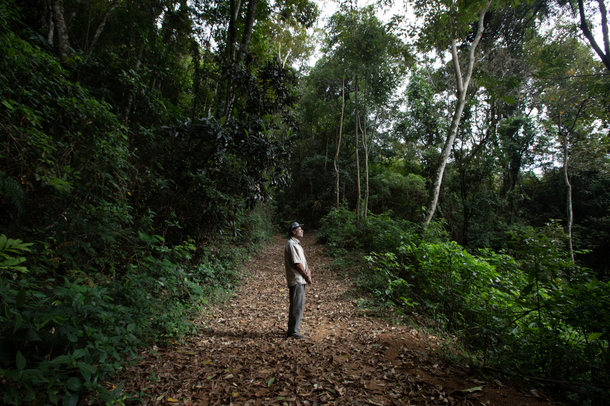
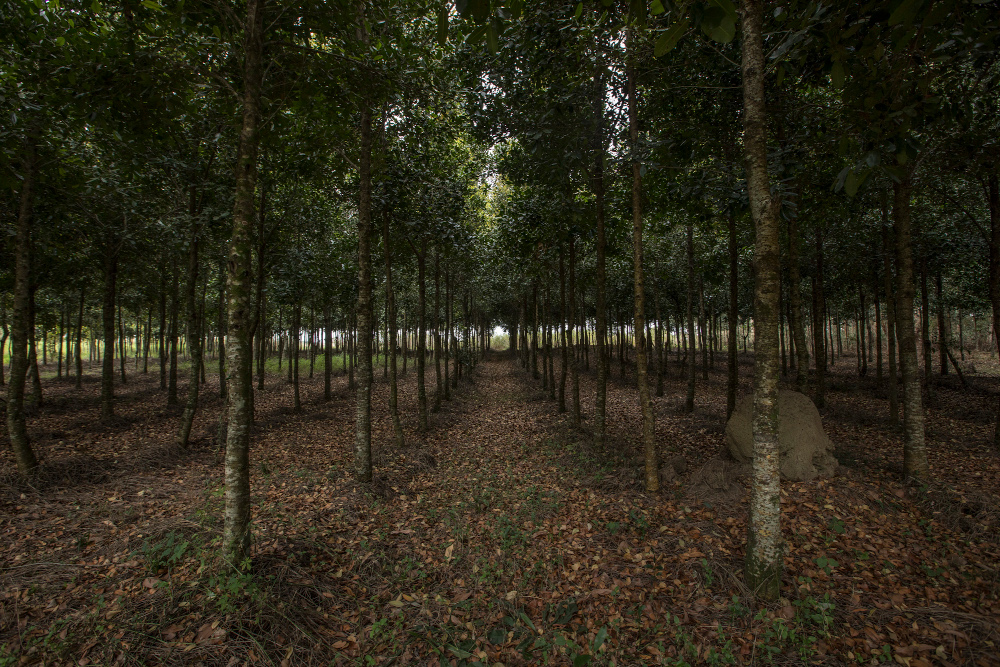

O Portal da Mantiqueira é um instrumento voltada à gestão de informações georreferenciadas que
monitora mais de 400 municípios que fazem parte de programas de restauração na região!
Acesse o portal
Com o objetivo de gerar informações e dados úteis
em prol da preservação ambiental, o Portal da Mantiqueira é um instrumento voltada à gestão de
informações georreferenciadas que monitora mais de 400 municípios que fazem parte de programas
de restauração na região, como o Programa Conservador da Mantiqueira
(acesse aqui).
Além de reunir de maneira organizada os dados espaciais, o portal conta com funcionalidades e
recursos que oferece aos gestores locais, de forma gratuita, um ambiente espacial e cadastral
para auxiliar na tomada de decisão e ao mesmo tempo com interface intuitiva, permitindo aos
interessados coletar dados, gerar relatórios recentes e ter uma visão ampla e completa sobre
restauração florestal na região.


A plataforma conta com dados territoriais como a hidrografia, áreas de preservação permanente,
números atualizados do CAR (Cadastro Ambiental Rural), além de ferramentas geoespaciais para
cadastro de áreas em processo de restauração e conservação, iniciativas de saneamento rural e
cercamento para condução de regeneração natural no âmbito de programas municipais de pagamento
por serviços ambientais (PSA). Gestores municipais e parceiros podem inserir informações que são
fundamentais para autoridades locais e proprietários elaborarem de estratégias e tomada de
decisões para projetos de restauração e conservação da Mantiqueira. Seguindo as orientações da
Lei Geral de Proteção de Dados (LGDP), o portal possui espaço exclusivo para a inserção de dados
dos projetos, bem como um espaço público para consultas gerais.
O portal é desenvolvido pela organização não governamental The Nature Conservancy,com parceria
da MapBiomas, que ajuda com os dados geoespacias; a Lastrop, que auxilia com métodos e
aplicações em ecologia de paisagem e o Pacto pela Restauração da Mata Atlântica para a
governança da restauração.